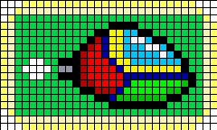
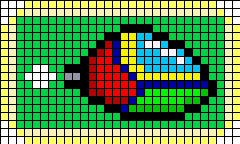

ImageMagick で PNG の形式を変換
PNG は同じように見える画像でも、バイナリ的に色んな形式で表現できます。ImageMagick でそれらの形式に変換する方法を並べてみます。
カラータイプ
PNG は以下の5種類のカラータイプがあります。仕様書からコピペします。
| Color Type | Allowed Bit Depths | Interpretation |
|---|---|---|
| 0 | 1,2,4,8,16 | Each pixel is a grayscale sample. |
| 2 | 8,16 | Each pixel is an R,G,B triple. |
| 3 | 1,2,4,8 | Each pixel is a palette index; a PLTE chunk must appear. |
| 4 | 8,16 | Each pixel is a grayscale sample, followed by an alpha sample. |
| 6 | 8,16 | Each pixel is an R,G,B triple, followed by an alpha sample. |
日本語に訳しつつ、いくつか情報を追記してみます。
| カラー型 | ビット 深度 |
PLTE | tRNS | ピクセル値の解釈 |
|---|---|---|---|---|
| 0 | 1,2,4,8,16 | × | ○ | グレースケール |
| 2 | 8,16 | ○ | ○ | R,G,B (PNG24) |
| 3 | 1,2,4,8 | 必須○ | ○ | |
| 4 | 8,16 | × | × | グレースケールの後ろにアルファ値。つまり YA |
| 6 | 8,16 | ○ | × | R,G,B の後ろにアルファ値。つまり RGBA (PNG32) |
Type:0 グレースケール
黒:0〜白:2^(bit数)の範囲の値を並べるだけの形式です。 bit数は 1,2,4,8,16 から選択できます。
$ convert Opaopa.png -type Grayscale Opaopa-type0.png

- 尚、tRNS チャンクをつける事で透明ピクセルも表現できます。
Type:2 RGB (PNG24)
ピクセルの R,G,B をそのまま展開します。
$ convert Opaopa.png png24:Opaopa-png24.png

PNG32 から PNG24 に変換しても透明度は消えますが、tRNS 付きの PNG8 からは tRNS を引き継げます。但し半透明は表現できず透明か不透明かのどちらかに割り当てられます。
$ convert Opaopa-png8-trns.png png24:Opaopa-png24-trns.png
- tRNS チャンクをつける事で透明ピクセルも表現できます。但し、どの色を透明にするかを指定する方式なので、透明か不透明のどちらかで半透明は表現できません。大人しく Type 6 の RGBA 形式を使いましょう。
- PLTE チャンクをつける事で擬似カラー端末で表示する時のパレットを指定できます。今時レアですが。(sPLT とおなじ？)
Type:3 パレット (PNG8)
色のパレットを持ち、そこへのインデックス値を並べて画像を表現します。
$ convert Opaopa.png png8:Opaopa-png8.png

tRNS チャンクをつける事で透明度も表現できます。


Type:4 透明度つきグレースケール
グレースケールの値と透明度のセットで表現します。
$ convert Opaopa.png -type GrayscaleMatte Opaopa-type4.png
Type:6 RGBA (PNG32)
ピクセルの R,G,B,A を展開します。
$ convert Opaopa.png png32:Opaopa-png32.png
インターレース
PNG のインターレースは独特で、Adam7 アルゴリズムを使います。
インターレース方式 Adam7
$ convert Opaopa.png -interlace PNG Opaopa-adam7.png
ピクセルの並ぶ順番
- 8x8 のブロックで左上のを１つ
- 4x4 のブロックで左上を１つ
- 2x2 のブロックで左上を１つ
- 残り全部
という順でピクセルを保存します。
| ピクセル | 実際の表示 |
|---|---|
 |
  |
 |
|
 |
 |
   |
ちなみに上記画像は ImageMagick で以下のように生成できます。(-fx オプション便利！)
インターレースのフェーズ別画像
$ convert Opaopa-dot1.png -filter Point -fx "!(i%8)*!(j%8)*u" Opaopa-dot1-adam7-1.png $ convert Opaopa-dot1.png -filter Point -fx "!(i%4)*!(j%4)*u" Opaopa-dot1-adam7-2.png $ convert Opaopa-dot1.png -filter Point -fx "!(i%2)*!(j%2)*u" Opaopa-dot1-adam7-3.pngフェーズ別画像ピクセル補完あり
$ convert Opaopa-dot1.png -filter Point -fx "p{i-i%8,j-j%8}" Opaopa-dot1-adam7-1-cmpl.png $ convert Opaopa-dot1.png -filter Point -fx "p{i-i%4,j-j%4}" Opaopa-dot1-adam7-2-cmpl.png $ convert Opaopa-dot1.png -filter Point -fx "p{i-i%2,j-j%2}" Opaopa-dot1-adam7-3-cmpl.pngドット絵の拡大風画像
$ convert Opaopa-dot1-adam7-1.png -filter Point -resize 800% -fx "(i%8!=0)*(j%8!=0)*u" Opaopa-dot8-adam7-1.png ＜略＞
メタデータ
gAMA (ガンマ補正)
単純にガンマ値を指定します。BigEndian の4byteで表現していて、ガンマ値を100000倍した値を格納します。逆にいうと、バイナリを整数として読み出し、1/100000 した値がガンマ値です。
cHRM (基本色度)
基本色度やホワイトバランスを指定します。 尚、sRGB 又は iCPP チャンクがある場合、cHRM チャンクは無効です。
iCPP (ICC プロファイル)
ICC プロファイルを埋め込めます。 (JPEG と同じ要領です)
$ convert Opaopa.png -profile sRGB.icc Opaopa-sRGB.png
$ convert Opaopa.png -profile GBR.icc Opaopa-GBR.png

$ convert Opaopa-sRGB.png -profile GBR.icc Opaopa-sRGB-GBR.png

$ convert Opaopa-sRGB-GBR.png -strip Opaopa-sRGB-GBR-strip.png

JPEG の時と同じのようです。
- 元画像ファイルに ICC プロファイルがない場合
- => 単に ICC プロファイルを付けるだけ
- ICC プロファイルがあった場合 => 見た目の色が変わらないよう画像データのRGBを書き換えつつ ICCプロファイルを上書きする
bKGD (背景色)
背景色を指定します。画像が貼られた時に埋まらなかったピクセルを埋める色です。
メタデータ (おまけ)
pHYs
DPI ならぬ DPM (インチでなくメートル単位) で物理的な解像度を指定します。印刷に影響するかもしれません。単位がインチでなくメートルなので少し計算が面倒です。
sBIT
元画像データの Bit深度を記録します。 恐らく、任意のビット深度を表現できる画像データ(例えば BMP とか)から PNG に変換した後で、また元のビット深度に戻したいといった場合に使えそうです。ビット深度を下げるような変換をした場合はつけないよう勧めています。意味がないので。
参考 URL
- PNG (Portable Network Graphics) Specification, Version 1.2
- PNGについて
- JPG ファイルフォーマット
- The Fx Special Effects Image Operator